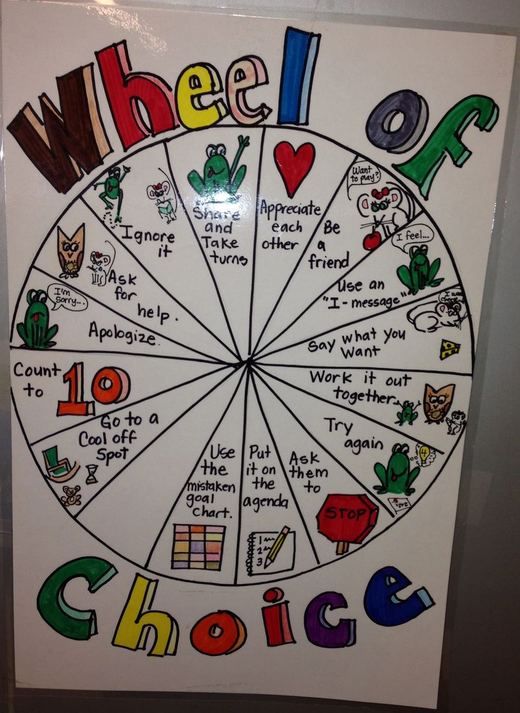

Both of my children attended Sunnyvale School District their entire K-8 years, I taught in the district for 4 years, and since 2015 I have spent nearly full time working with dedicated teachers and amazing students as a volunteer in elementary and middle school classrooms in this district. I love the kids, and I love the teachers. Even with dedicating a lot of time, my impact with students is personal and rewarding, but small in the big picture.
I also feel very connected to the parents and the community overall. In 2008-9, when I was in treatment for breast cancer, not only my friends and neighbors, but also many people I had never met before reached out to me with meals, notes, cards, and messages of support for my whole family. It really made me want to dedicate my life to serving my community. After this experience, and a year of working hundreds of hours developing an all-school garden program at Cherry Chase Elementary, I went back to school to get my teaching credential.
A seat on the school board is a way to help more support our schools and the students at the next level. It's literally a seat at the table to help shape policy that affects our whole community. I am still volunteering in Sunnyvale School District today, even though my children have aged-out of the district. I'm excited about the chance to concurrently serve Sunnyvale in a role on the School Board.
I have a unique background and am qualified for the job:
School Boards are important.
This November 6th (or sooner if you vote by mail), you may vote for three (3) seats on the Sunnyvale School Board. Please vote for me as one of your candidates! Thank you!
Every student is unique, but I believe that to be successful life-long learners all students need:
The truth is, the adults in the equation (parents, teachers, staff, administrators) need the same things. We must support our school employees and our families so that they can support the students.
We have to do better in terms of equity for our low-socioeconomic status students who are English language learners. Our district is currently slightly underperforming the county average in this group. We have resources invested, and steady growth, but what we have at the moment is not enough.
We have to challenge our students who are academically advanced. We don't want anyone to have a "staycation" at school. We want all students to grow a lot during their time in our district, and to learn intrinsic motivation. We want all our students to be inspired and motivated. We have to create and nurture a scholarly culture with high expectations for all students. We can do better district-wide.
I would support the district directly funding 5th grade science camp rather than leaving it up to the individual school sites. When I was at Fairwood, students who would transfer in would have their "science-camp" fundraising account follow them - some of these students had been fundraising for science camp since Kindergarten at their other school. Fundraising for this event puts a lot of pressure and hardship on some families and some schools. If the funding is not available from the families or a well-funded PTA, principals must take it out of their site budget, and that means that it could come out of teacher training or other important things for the students in that specific community. Not every family can afford to write a $300 check (and outfit their student) for science camp. We have to look at community partners and overall fundraising mechanisms so that we can make this hands-on science experience equitable for all students.
I would like to see Sunnyvale students have access to hands-on learning in Science/ outdoor classrooms that our neighboring cities have made accessible for their students.
We need to retain our teachers and staff who are being priced out of the district in housing. We spend a lot of time and money training teachers, and then they leave. We are losing highly qualified teachers, when having highly qualified teachers has been proven critical to student success.
We need to support social emotional learning at every level in our district for ALL students. As a school board member, I will collaborate to set policy and seek out business and community partners to support socio-emotional learning.
Students can learn to self-regulate, and to have a growth mindset. Students need encouragement from their whole community, peers and adults, so that they feel that they belong in school and so that they can persevere.
There are some vulnerable subgroups (immigrant students, LGBTQ students, students with special needs, students who have experienced trauma, and others) who need advocates at the district level. Many students are under pressure that is new to us - social media, information overload, and a more contentious contemporary social environment. Social skills are healthy coping skills and life skills that can serve our students beyond 8th grade.
Help shape the future of Sunnyvale education. You can endorse me, share my website or with friends and neighbors on social media, volunteer (to place a yard sign, to host a meet-and-greet, to distribute materials to neighbors), and you can donate to my campaign. I am not running an over-the-top campaign, but flyers, mailers, and yard signs, etc. all cost money and any amount you can contribute will help a great deal. Likewise, if you can knock on doors or put up a yard sign, or share information about my campaign through social media, you are helping me gain visibility in the community. Thank you!